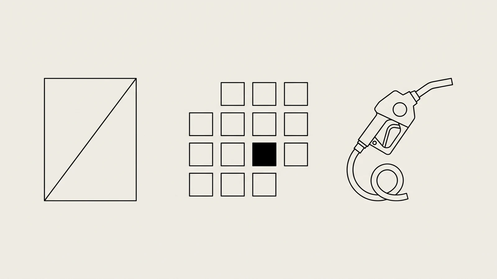

Tu proveedor puede cancelar la factura del diésel después de que ya la dedujiste.
Sobre cada comprobante que tu flota ya dio por cerrado corren dos relojes: el plazo de cancelación de CFDI que rige en 2026 y los treinta días del artículo 69-B. Ninguno de los dos toca la puerta.

Un CFDI no es un papel: es un estado guardado en los servidores del SAT. Puede estar «Vigente» el martes en que liquidaciones lo pegó al expediente del viaje y aparecer «Cancelado» siete meses después, sin que nadie de tu flota se entere. Para entonces la deducción ya se tomó, el IEPS del diésel ya se acreditó y el viaje ya se le cobró al cliente. El soporte se cayó solo.
Hasta cuándo se puede cancelar un CFDI
Respuesta corta: hasta el mes en que vence la declaración anual del ISR del ejercicio en que se expidió el comprobante. Si el proveedor es persona moral, ese mes es marzo — la Ley del ISR le da tres meses después del cierre. Si es persona física, abril. En la práctica: una factura de diésel emitida en marzo de 2026 por una gasolinera que tributa como persona moral se puede cancelar hasta marzo de 2027.
Ese es el plazo de cancelación de CFDI que rige en 2026, y la novedad no es el plazo en sí — la Resolución Miscelánea ya lo daba como facilidad — sino dónde vive ahora: subió al Código Fiscal de la Federación con la reforma publicada en el DOF el 7 de noviembre de 2025. Lo que estaba en una regla que se renueva cada año quedó en ley.
La última línea es la que hay que leer dos veces: siempre que la persona a favor de quien se expidan acepte su cancelación. Cancelar no es un acto unilateral del proveedor. Es una solicitud que llega a tu buzón tributario y que espera respuesta tuya. Ahí empieza el problema real.
Si nadie contesta, se cancela
El silencio cuenta como aceptación, y el plazo para romperlo es corto.
Tres días. En una flota, ese aviso del buzón tributario cae en un correo que el despacho contable revisa dos veces por semana, o el contralor cuando puede, o nadie durante el cierre. No responder no es dejar la decisión pendiente: es tomarla.
Las dos excepciones que sí protegen al comprador
- CFDI de ingreso y de egreso con el «Complemento Concepto para la facturación de Hidrocarburos y Petrolíferos», que deben incorporar quienes enajenan gasolinas y diésel.
- CFDI de ingreso con complemento Carta Porte donde se registre en el campo «BienesTransp» alguna de estas tres claves: 15101505 Combustible Diesel, 15101514 Gasolina regular menor a 91 octanos o 15101515 Gasolina premium mayor o igual a 91 octanos.
En esos dos supuestos el silencio no cancela: la aceptación tiene que ser expresa. Y ya está vigente. El Transitorio Décimo Tercero de la RMF 2026 dejó la excepción condicionada a que el SAT publicara el complemento en su Portal y a que corrieran los treinta días naturales de la regla 2.7.1.8. Ambas cosas ya pasaron: el esquema del complemento vive en el portal del SAT desde marzo de 2026, así que la obligación surtió efecto a partir del 24 de abril de 2026. Desde esa fecha, en esos CFDI el silencio del receptor dejó de valer como aceptación. Y conviene ver el reverso antes de celebrar: protege tus litros de diésel y no protege nada más. Refacciones, llantas, servicio de taller, hospedaje del operador, la caseta facturada por el concesionario de la autopista — ahí el silencio sigue cancelando.
El segundo reloj: la lista 69-B
El primer reloj lo dispara tu proveedor. El segundo lo dispara el SAT, y no te avisa a ti. Cuando la autoridad concluye que un contribuyente emitió comprobantes sin activos, personal, infraestructura o capacidad material, lo publica en un listado en el DOF y en su portal. Desde esa publicación, las operaciones amparadas en sus comprobantes «no producen ni produjeron efecto fiscal alguno» — en pasado, hacia atrás, sobre todo lo que ya dedujiste.
Treinta días, y son hábiles: el artículo 12 del CFF excluye de los plazos fijados en días los sábados, los domingos y los días festivos que enumera. Quien dedujo queda del lado de los EDOS y la carga probatoria es suya: demostrar que el diésel entró al tanque, que la llanta se montó en una unidad, que el servicio se prestó. El CFDI no sirve como prueba, porque el CFDI es precisamente lo que se está poniendo en duda.
Nadie vuelve a mirar un CFDI después de liquidado. Los dos plazos corren exactamente ahí.
| Reloj | Quién lo dispara | Dónde te enteras | Plazo |
|---|---|---|---|
| Cancelación del CFDI | El proveedor que lo emitió. | Solicitud en tu buzón tributario. | 3 d |
| Listado del artículo 69-B | El SAT, al publicar el listado definitivo. | DOF y portal del SAT. A ti no te notifican. | 30 d |
Por qué esto pega más fuerte en una flota
Una flota compra en decenas de estaciones distintas al mes, más talleres, más refaccionarias, más casetas, en rutas que casi nunca se repiten igual. No hay un proveedor grande al que vigilar: hay una cola larga de proveedores chicos, muchos con un RFC que nadie volvió a mirar después de la primera carga de combustible. Y ese comprobante no vive en un archivero por proveedor: vive dentro de la liquidación de un viaje que se cerró hace meses.
Ahí está el nudo. El ciclo de liquidación lo tocan cinco puestos distintos y hacerlo a mano cuesta alrededor de $105 por viaje. Ninguno de esos cinco tiene en su descripción de puesto volver a abrir un viaje cerrado para revisar si un CFDI cambió de estado.
Censo propio de Likida, agosto 2026: costo de liquidar un viaje a mano de ~$105 MXN, en una banda de $94 a $115, con cinco puestos involucrados en el ciclo.
Una cadencia de revalidación anclada al registro de liquidación
Revalidar comprobantes sueltos sirve de poco. Un lote de miles de XML sin saber a qué viaje pertenece cada uno no te dice a quién reclamarle, qué unidad tocó ni qué renglón de la deducción se movió. El único lugar donde el CFDI, el viaje, la unidad, el operador y la fecha están amarrados entre sí es el registro de liquidación. De ahí es de donde conviene colgar la vigilancia.
Todos los días
- Leer el buzón tributario buscando solicitudes de cancelación y resolverlas dentro de los tres días.
- Rechazar por regla lo que no traiga una razón documentada del proveedor: una cancelación aceptada por silencio no se revierte sola.
Cada semana
- Reconsultar el estado de los CFDI que entraron a las liquidaciones cerradas más recientes.
- Cruzar el padrón de RFC de proveedores contra el listado del artículo 69-B que publica el SAT.
En el cierre mensual
- Revalidar el ejercicio en curso completo, no solo el mes: el emisor puede cancelar hasta el año siguiente.
- Anotar en el expediente qué comprobantes cambiaron de estado y qué renglón de la deducción tocan.
Antes de la declaración anual
- Barrer el ejercicio anterior entero durante el mes en que el emisor todavía puede cancelar: es la ventana de mayor riesgo del año.
- Dejar por escrito el resultado del barrido — fecha, universo revisado y hallazgos.
Ya deduje un CFDI que me cancelaron. ¿Qué hago?
Respuesta corta: primero determinas si la cancelación procedía, y solo después decides entre reclamarla o corregir. En ese orden, no al revés.
- Verifica el estado y la fecha de cancelación en el servicio de consulta del SAT, no en el PDF que te mandaron.
- Revisa si hubo solicitud en tu buzón y si alguien la aceptó, la rechazó o la dejó vencer.
- Si la operación existió y el proveedor canceló por error, pídele que emita un CFDI nuevo relacionado con el cancelado: la regla 2.7.1.34. contempla ese camino cuando la operación subsiste.
- Si la cancelación es firme, corrige con declaración complementaria del periodo afectado antes de que la autoridad lo encuentre.
- Deja la evidencia de materialidad en el expediente del viaje — bitácora, litros, unidad, operador, ruta y comprobante de pago.
Ese último punto es el que decide todo lo demás. Si la evidencia sigue amarrada al viaje, responder un requerimiento es un trámite de una tarde. Si está repartida entre un correo, una carpeta de fotos y la memoria del liquidador que ya no trabaja ahí, es un problema de semanas — y el plazo son treinta días.
- Código Fiscal de la Federación, artículos 12, 29-A cuarto párrafo y 69-B — texto vigente, última reforma DOF 09-04-2026; el cuarto párrafo del 29-A fue reformado por decreto publicado en el DOF el 7 de noviembre de 2025 — texto vigente en diputados.gob.mx.
- Resolución Miscelánea Fiscal para 2026, reglas 2.7.1.34., 2.7.1.35. y 2.7.1.48., y Transitorio Décimo Tercero — DOF 28 de diciembre de 2025. La regla 2.7.1.48. fue reformada por la Primera Resolución de Modificaciones — DOF 9 de julio de 2026 — publicación del SAT.
- Ley del Impuesto sobre la Renta, artículos 76, fracción V (personas morales: tres meses siguientes al cierre) y 150 (personas físicas: mes de abril) — texto vigente en diputados.gob.mx.
- SAT, «Complemento Concepto para la facturación de Hidrocarburos y Petrolíferos» — complementos de factura electrónica.
- Censo propio de Likida, agosto 2026 — costo de liquidar un viaje a mano y puestos que tocan el ciclo.
¿Sabrías hoy, sin abrir el portal del SAT comprobante por comprobante, cuáles de los CFDI que ya liquidaste siguen vigentes?
 Contáctanos
Contáctanos